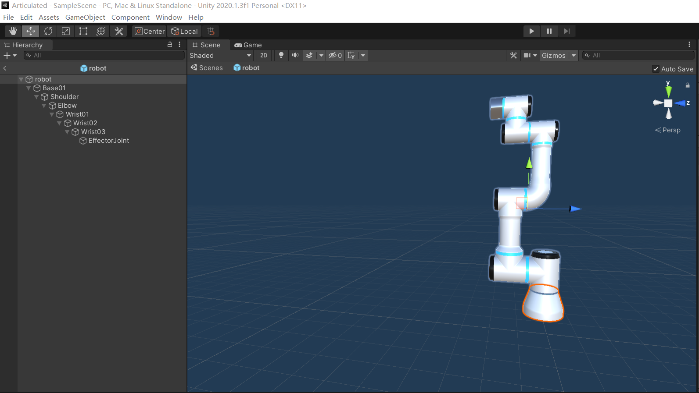
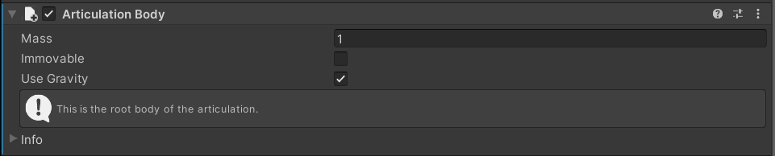
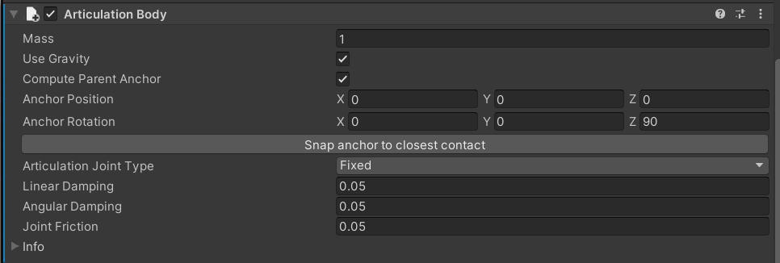
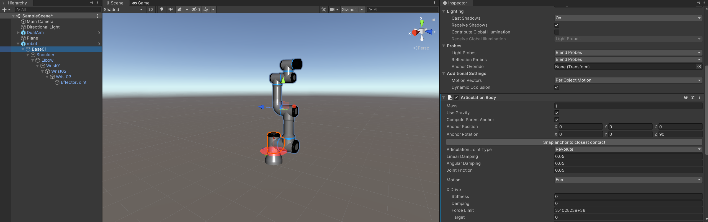

C Sharp玩unity系列3——ArticulationBody
从FXB导入unity
Unity官方支持的Hierarchy结构的数据类型是FBX，尽管obj文件+material也可以正常导入Unity，但是因为obj文件本身并不支持层级结构，因此最多就是两层，对于机械臂这种Hierarchy结构的物体来说并不友好。因此我们从FBX类型文件出发，使用代码将其导入unity并生成prefab。具体代码和导入obj文件几乎相同，如下。
string meshName = "demo.fbx";
string prefabName = "demo.prefab";
GameObject gameObject;
GameObject go = AssetDatabase.LoadAssetAtPath(meshName, typeof(UnityEngine.Object)) as GameObject;
if (go != null)
{
gameObject = Instantiate(go);
PrefabUtility.SaveAsPrefabAsset(gameObject, prefabName);
AssetDatabase.Refresh();
Destroy(gameObject);
}
有了Prefab之后，就可以直接把prefab导入scene中，接下来就可以真正搞起来了。
ArticulationBody
从Unity2020.10b1以来，Unity开始支持ArticulationBody这个属性。ArticulationBody的物理性质可以认为“继承”自刚体（在代码层面上不是继承关系，这里是一个语义上的“继承”），同时又对不同Joint之间的关系和相对位置进行了约束。

如上图所示，一个逻辑上树形结构的Articulation物体，不同Joint之间的关系是层层递进的，这和ROS中的TF是一脉相承的逻辑关系。当一个part运动时，这个part的所有孩子都会跟随着这个part一起运动。
在使用ArticulationBody时，树形结构中的每一个部分都要add ArticulationBody这个component（这里注意，Unity中的父子关系并不是继承，孩子并不能继承父亲的属性，例如Rigidbody、MeshCollider、ArticulationBody等，父子关系只表现在transform上）。
如果是根节点的part，Inspector窗口中ArticulationBody的属性值如下图。Unity会自动识别该part是否为ArticulationBody的根。如果加了ArticulationBody的part不是从根节点开始的，那么Unity会自动将最靠近根节点的part作为根。例如，上图中，我们只把Shoulder及其所有孩子和后代添加ArticulationBody属性，则Shoulder会被认为是根。

对于其他的part，Inspector窗口的ArticulationBody属性值如下图。

这里最关键的是选项就是Anchor和Articulation Joint Type。由于ArticulationBody是今年新加入的类，官方文档中还没有详细解释，网上的博客也几乎没有，因此我在这里只结合我在使用时试验出的结果以及推测，对上述两个名词进行一定解释，如果后面发现有错误，会随时修改。
Anchor
Anchor顾名思义，就是两个part之间相连接的点。Anchor在ArticulationBody中有两部分，一部分是Parent Anchor，还有一部分是这个part本身的Anchor（下直接称Anchor）。一般情况下，我们会勾选Compute Parent Anchor，这时只能调整Anchor，我推测此时的Parent Anchor和Anchor是重合的。当然，也可以不勾选Compute Parent Anchor，手动调整Parent Anchor的position和rotation。但是，我实际尝试发现，即便Parent Anchor飘到一个跟物体毫不相干的位置，也并不会影响正常的运动。
对于Anchor，它的position和rotation是相对于该part的原点而言的。一般而言，一个part的原点就是该part与其父亲part之间相连的点，因此position是(0,0,0)，但是Rotation相对更重要，这关系到一个joint的旋转自由度，详见Articulation Joint Type。
Articulation Joint Type
Articulation Joint Type一共有四种：
- FixedJoint：固定关节，0自由度
- PrismaticJoint：移动关节，1自由度
- RevoluteJoint：旋转关节，1自由度
- SphericalJoint：球形轴，3自由度
这里需要强调的是，对于PrismaticJoint，可以自己指定自由度的一个轴；对于RevoluteJoint，需要调整parent anchor，本part只能绕parent anchor的X轴方向旋转。
对于机械臂的操作，我们都是使用RevoluteJoint，因此需要手动调整每一个part的anchor。在Unity中，调整anchor时会有相应的指示标记。实际上，如果我们勾选Compute Parent Anchor，只需调整Anchor即可，最终让标记与转轴重合，如下图所示。

ArticulationBody的控制
对于ArticulationBody的控制，我们使用XDrive、YDrive、ZDrive去控制。这些Drive从属于ArticulationDrive这一类。我们只需要去指定Drive的target或targetValue即可。
在Unity给出的demo中，它采用的编程方式是给出ArticulationBody的三个状态：Positive、Negative和None，以此来控制每一个part的运动。在这种编程方式下，每一个part都需要绑定一个脚本ArticulationJointController.cs。具体的代码都很简单，可以自行查看。
碰撞检测
碰撞检测主要是由Collider作用的。在这里我们选用MeshCollider，每一个part都需要加上MeshCollider，从而碰撞检测更加精细。MeshCollider一般我们都会选用Convex属性，在Convex下还有Is Trigger属性，我们这里介绍一下。
Is Trigger：当Is Trigger启用时，碰撞的物理效果不会显示出来，因此物体之间会有相互穿入的效果出现。但是碰撞依然会被检测到，当碰撞被检测到时，Unity会自动调用发生碰撞的物体上脚本的
- OnTriggerEnter(Collider other)
- OnTriggerExit(Collider other)
- OnTriggerStay(Collider other)
函数。这个参数other是与该物体发生碰撞的碰撞体。根据函数名的不同，Enter是刚刚碰撞到时调用的，Exit是碰撞结束时调用的，而Stay是在碰撞一直持续的过程中调用的。
所以如果想省事，就直接选用convex，不选isTrigger，就直接可以出现正常的物理现象。这时如果我们还想加入碰撞检测，或者说如果我们想在碰撞时输出点什么，就需要自定义
- OnCollisionEnter(Collision collision)
- OnCollisionExit(Collision collision)
- OnCollisionStay(Collision collision)
函数中的一个或多个。这些函数中的参数collision是Collision类，与碰撞描述相关。需要注意的是，只有物体加上了Rigidbody属性后，这三个函数才有效；而与Trigger相关的函数是不需要物体有Rigidbody属性的。总而言之，MeshCollider的Convex选项和isTrigger选项、是否添加了Rigidbody与是否有碰撞的物理现象、能否调用相应函数的关系如下表。其中MC是MeshCollider，RB是Rigidbody。
| MC+convex | MC+convex+isTrigger | MC+convex+RB | MC+convex+isTrigger+RB | |
|---|---|---|---|---|
| 碰撞效果 | 有 | 无 | 有 | 无 |
| OnCollision*() | 不能 | 不能 | 能 | 不能 |
| OnTrigger*() | 不能 | 能 | 不能 | 能 |